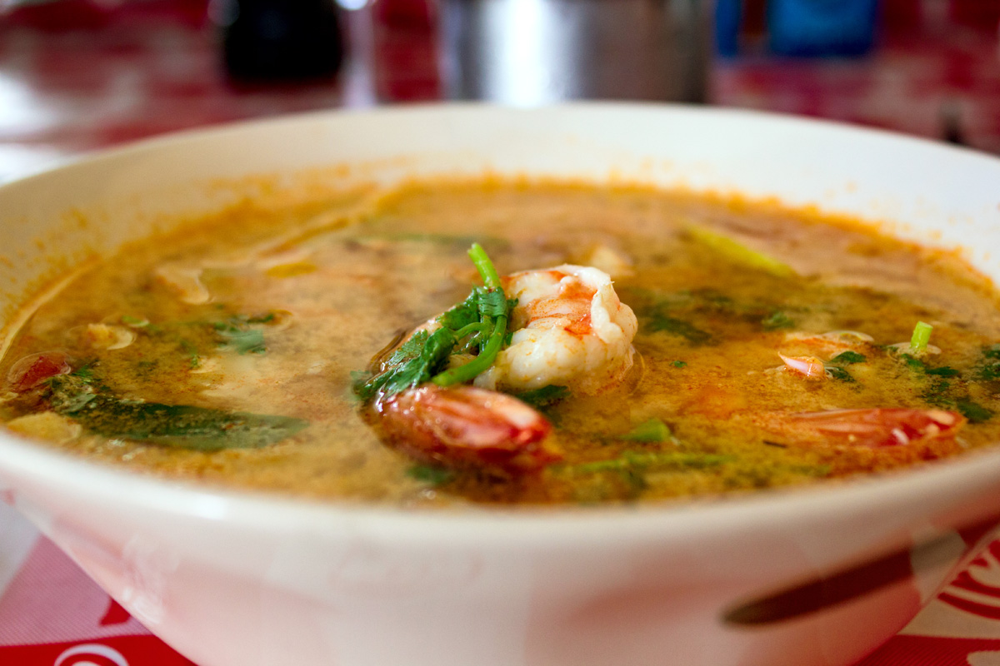

Tom Yam Kung

Spicy Shrimp Soup
Country of Origin : Thailand
Tom Kha Gai is a spicy, tangy soup based around the flavors of shrimp and lemongrass. This strong medley of flavors assaults the palate and invigorates the senses.
Ingredients List
- 1 ½ cups unseasoned chicken or pork broth
- 7-8 large shrimp, peeled with head and tail attached
- 3-4 fresh kaffir lime leaves, torn
- 4-5 slices lemongrass, 1/8 -inch thick
- 4-5 thin slices of fresh galangal
- ¾ cup canned straw mushrooms
- 1 tbsp Nam Prik Pao
- 2 tbsp fresh lime juice, to taste
- 2 tbsp fish sauce, to taste
- 4-5 small dried chilis
- ¼ cup cilantro leaves, lightly packed
Directions
- In a medium saucepan, gently simmer broth.
- Add lemongrass, galangal, and kaffir lime leaves.
- Add mushrooms.
- Add Nam Prik Pao, fish sauce, and dried chilis.
- Lower in shrimp, making sure the broth continues at an even, gentle simmer.
- Stir shrimp. Once shrimp turn opaque and firm up, remove saucepan from heat.
- Season soup with lime juice and more fish sauce if necessary.
- Stir in cilantro and serve piping hot with rice.
Notes
This recipe, sometimes transliterated into 'Tom Yum Goong', calls for canned button mushrooms. These can just as easily be swapped for fresh straw, button, or oyster mushrooms depending on taste. Also, it can be made with a fish or shrimp broth if available.